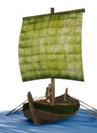

Large Boats


Class: heavy · Category: ship · Men per unit: 6
Description
Large boats are battle-worthy craft, with crews large enough to fight boarding actions when required. These boats are not a match, however, for ships of more 'civilized' peoples. These ships, however, have better sea keeping qualities than many craft developed for the relatively calm waters of the Mediterranean. They can carry large cargoes - or raiding parties - across many trackless miles of sea.
Stats
| Rank in roster | ||
|---|---|---|
| Men per unit | 6 | █········· 0% |
| Attack | 8 | █········· 9% |
| Charge bonus | 0 | █········· 0% |
| Defence | 8 | █········· 0% |
| · armour | 3 | ██········ 21% |
| · defence skill | 5 | █········· 1% |
| · shield | 0 | █········· 0% |
| Morale | 8 | ██········ 19% |
| Discipline | Normal | |
| Training | Highly trained | |
| Recruitment cost | 760 dn | █········· 1% |
| Upkeep per turn | 190 dn | █········· 6% |
| Turns to recruit | 3 |
Weapons
| Primary | Secondary | Primary | Secondary | Primary | Secondary | Primary | Secondary | ||||
|---|---|---|---|---|---|---|---|---|---|---|---|
| Attack | 8 | — | Charge bonus | 0 | — | Type | melee · other | — | Damage | piercing | — |
Defence
| Primary | Secondary | Primary | Secondary | Primary | Secondary | Primary | Secondary | ||||
|---|---|---|---|---|---|---|---|---|---|---|---|
| Total | 8 | — | Armour | 3 | — | Defence skill | 5 | — | Shield | 0 | — |
Condition and terrain
| Hit points | 1 | Ground: scrub / sand / forest / snow | 0 / 0 / 0 / 0 | Charge distance | 30 | Formations | Square |
Technical stats
| Time between blows (primary / secondary) | 2.5 s / — | Extra fatigue in hot climates | 0 | Spacing between men: close / loose | 1.2 × 2.16 m / 2.4 × 2.88 m | Default ranks | 3 |
The mod gives this unit more than one set of numbers. The figures above are one of them, so check in-game if the exact values matter.
Who can recruit it
A core roster unit for 113 factions, each able to raise it anywhere they hold the right building:
Aedui · Allobroges · Ambrones · Anartes · Aorsi · Apuani · Ardiaei · Arevaci · Arse · Arshi · Arverni · Asta · Astures · Aulerci · Bastarnae · Basti · Belgae · Belli · Bituriges · Boii · Breuni · Brigantes · Buri · Cadurci · Caledonii · Cantabri · Cantiaci · Carmo · Carpetani · Catuvellauni · Celtici · Cenomani · Chatti · Chauci · Cherusci · Chorasmia · Cimbri · Cisalpine Boii · Corsi · Costoboci
…and 73 more.
Exactly what a settlement must have, route by route (4)
| For | Building | Also requires | For | Building | Also requires | For | Building | Also requires | For | Building | Also requires |
|---|---|---|---|---|---|---|---|---|---|---|---|
| The 113 factions in note a | Trade Port | Government Building (Dependency, Indirect Rule, Direct Rule or Homeland) · not in winter in a sub-arctic or alpine region · Garrison Building or Tier 1 Military Industrial Complex | The 113 factions in note a | Shipwright | Government Building (Dependency, Indirect Rule, Direct Rule or Homeland) · not in winter in a sub-arctic or alpine region · Garrison Building or Tier 1 Military Industrial Complex | The 113 factions in note a | Dockyard | Government Building (Dependency, Indirect Rule, Direct Rule or Homeland) · not in winter in a sub-arctic or alpine region · Garrison Building or Tier 1 Military Industrial Complex | The 113 factions in note a | The Cothon of Carthage | Government Building (Dependency, Indirect Rule, Direct Rule or Homeland) · Garrison Building or Tier 1 Military Industrial Complex |
a. Aedui · Allobroges · Ambrones · Anartes · Aorsi · Apuani · Ardiaei · Arevaci · Arse · Arshi · Arverni · Asta · Astures · Aulerci · Bastarnae · Basti · Belgae · Belli · Bituriges · Boii · Breuni · Brigantes · Buri · Cadurci · Caledonii · Cantabri · Cantiaci · Carmo · Carpetani · Catuvellauni · Celtici · Cenomani · Chatti · Chauci · Cherusci · Chorasmia · Cimbri · Cisalpine Boii · Corsi · Costoboci · Crobyzi · Daesitiates · Dardania · Delmatae · Dumnonii · Durotriges · Eburones · Edeta · Egyptians · Eravisci · Frisii · Galatians · Gallaeci · Gallic Veneti · Gallic Volcae · Getae · Gothones · Helvetii · Hermunduri · Histri · Iapodes · Iazyges · Ilergetes · Ilici · Illyrian Kingdom · Ingauni · Insubres · Iverni · Kucha · Labeatae · Lacetani · Langobardi · Liburni · Lugii · Lusitanians · Marcomanni · Nervii · Norici · Ordovices · Oretani · Osismii · Quadi · Rhoxolani · Royal Sarmatians · Royal Scythians · Saka · Salassi · Salluvii · Sardinians · Scordisci · Semnones · Senones · Sequani · Silures · Siraces · Sotiates · Sugambri · Taurisci · Tencteri · Teurisci · Treveri · Trinovantes · Tylis · Tyragetae · Ubii · Usipetes · Vaccaei · Vascones · Venedae · Veneti · Vettones · Vindelici · Volcae